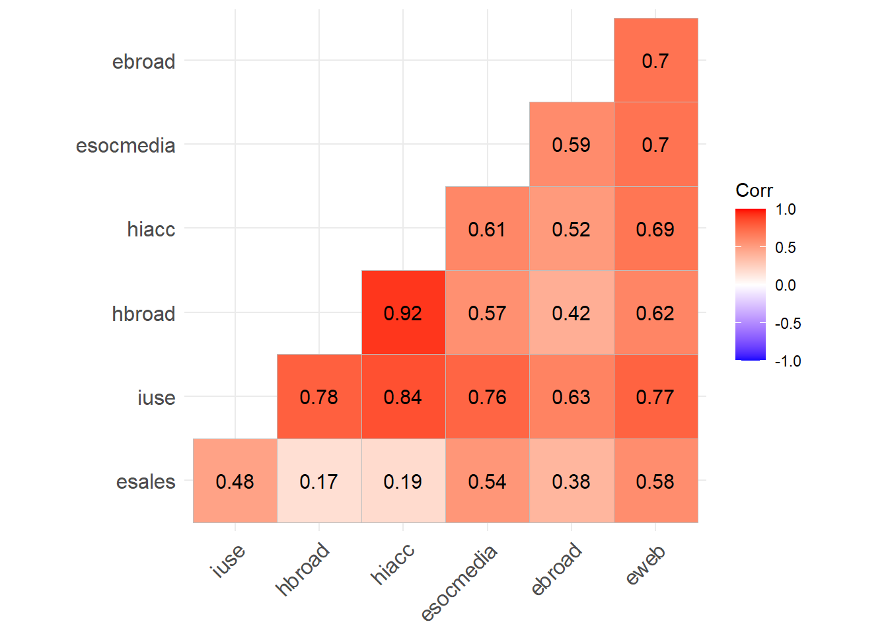
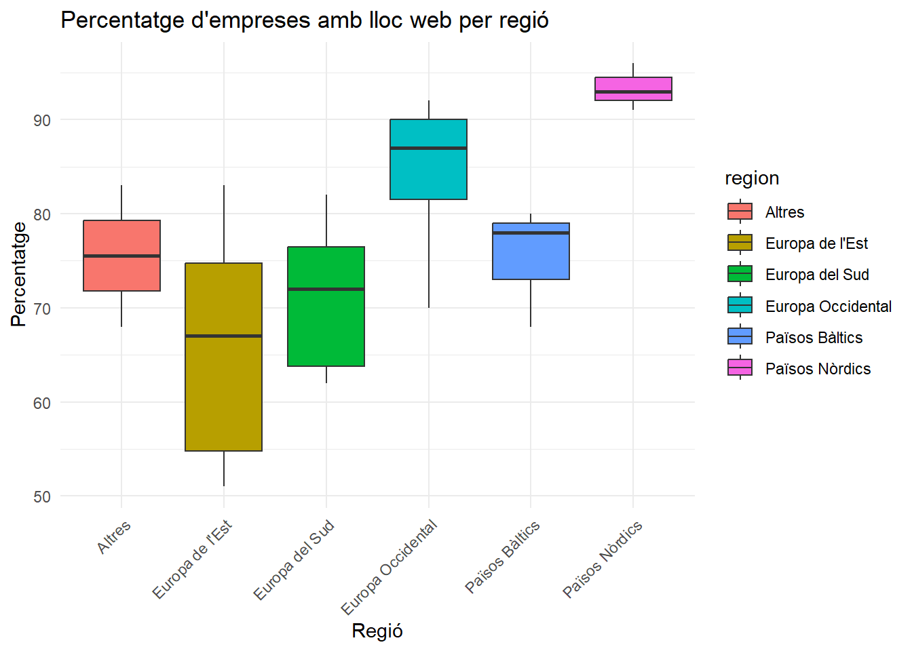
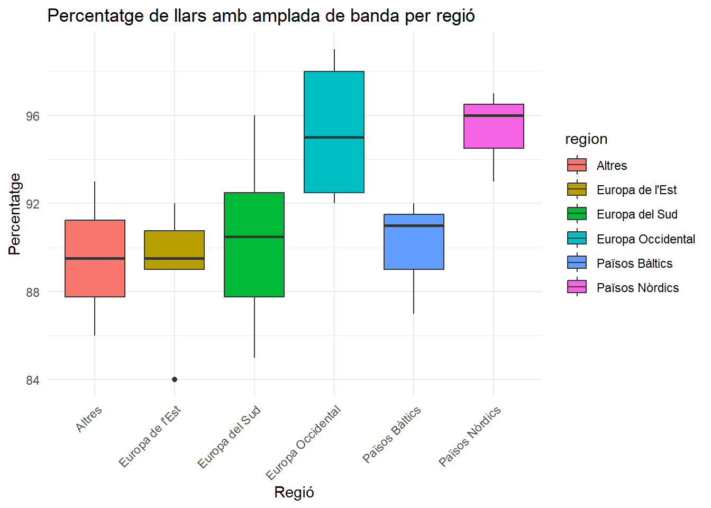
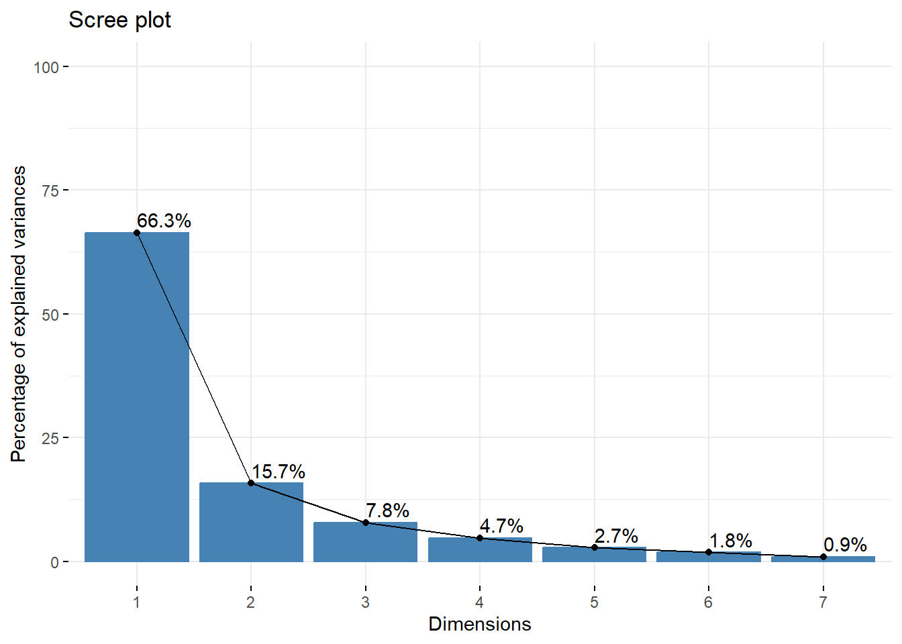
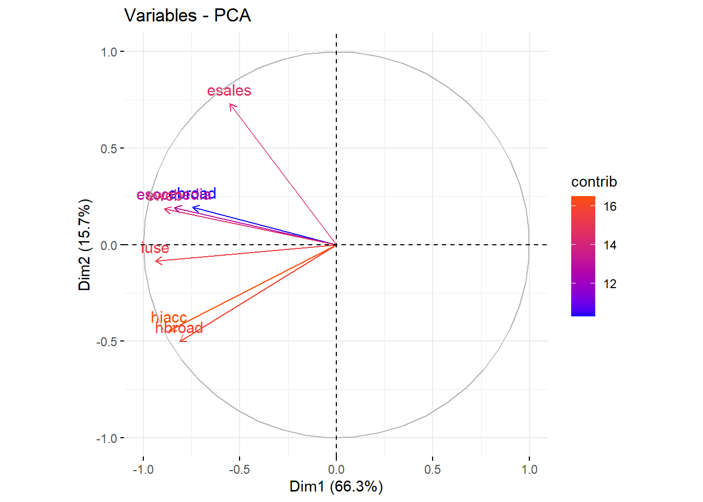

Anàlisi de Dades TIC a Europa - 2021
Anàlisi de Dades
Autors: Miquel Àngel Llauger, Melcion Ciudad i Albert Moya
Introducció
Objectiu
L’objectiu d’aquest treball és realitzar un anàlisi exploratori de les dades disponibles sobre l’ús de les Tecnologies de la Informació i la Comunicació (TIC) durant l’any 2021.
L’anàlisi es centra en:
Identificar patrons rellevants en l’ús de TIC per part de les empreses, les llars i els individus.
Observar possibles relacions entre les variables disponibles, com ara la connexió a Internet, l’ús de xarxes socials o la realització de transaccions electròniques.
Realitzar una reducció dimensional de les dades mitjançant una tècnica d’Anàlisi de Components Principals (PCA) per resumir la informació de manera més eficient i entendre millor els factors determinants.
Dades
Les dades utilitzades en aquest anàlisi procedeixen d’un conjunt estructurat amb les següents 7 variables:
ebroad: Percentatge d’empreses amb accés a Internet de banda ampla.
esales: Percentatge d’empreses que realitzen vendes electròniques.
esocmedia: Percentatge d’empreses que utilitzen xarxes socials.
eweb: Percentatge d’empreses amb lloc web.
hbroad: Percentatge de llars amb accés a Internet de banda ampla.
hiacc: Percentatge de llars amb accés general a Internet.
iuse: Percentatge d’individus que utilitzen Internet.
A més, es crearà una nova variable categòrica anomenada region, que classificarà els països europeus en funció de la seva ubicació geogràfica:
- Europa Occidental: BE, FR, DE, AT, NL, LU, IE.
- Europa del Sud: ES, IT, PT, EL, CY, MT.
- Europa de l’Est: CZ, BG, HU, PL, RO, SK.
- Països Nòrdics: DK, SE, FI, NO.
- Països Bàltics: EE, LV, LT.
Anàlisi Exploratori de Dades (EDA)
Estadístiques descriptives
Per començar, si haguessim tingut suficients observacions hauriem fet una matriu de dispersió, separant per regions per poder veure la influència de cada una d’elles. Com no és el cas, i per veure les correlacions entre variables numèriques emprarem un mapa de calor:
Interpretació: Com podem veure a la matriu, tenim algunes dades amb un alt nivell de correlació:
hiaccihbroad: percentatge de llars amb accés a internet d’amplada de banda i el percentatge independentment de la seva connexió.hiacciiuse: percentatge de llars amb accés a internet i percentatge d’individuus que l’utilitzen.
Per l’altra banda també tenim variables que practicament són independents com és el cas de:
hiacciesales: percentatge de llars amb accés a internet i percentatge d’empreses que realitzen ventes electròniques.
Com hem dit abans, no podem crear una matriu de dispersió de les dades respecte a la regió, és per això que ensanyarem una sèrie de gràfics separant per regions. Per triar aquests gràfics, ho farem utilitzant variables poc correlacionades entre elles per obtenir la màxima informació possible. Si feim dos gràfics de variables que estan molt correlacionades, segurament siguin molt parescuts.
Gràfic de eweb segons la regió
Hem escollit aquesta variable perquè té molt bona correlació amb la resta de les variables, així que podem dir que les resumeix. En especial té un molt bon comportament amb les variables que descriuen a les empreses, per tant, és un bon candidat.

Gràfic de hiacc segons la regió
Aquesta variable també és molt interessant com a representant de les variables de les llars a causa de la seva gran correlació, com hem vist abans. Així ens podem fer una idea de com és la connexió a internet en les diferents regions.

Anàlisi de Components Principals (PCA)
Elecció de la matriu de covariància o correlació
En aquest cas és indiferent elegir la matriu de covariàncies o de correlació. Això passa perquè tenim totes les unitats en percentatges, per tant, estan a la mateixa escala. Si no fos el cas, hauriem d’elegir la matriu de correlació ja que estandaritza les variables.
Selecció del nombre de components principals
Ara bé, tenim dues maneres per calcular les components principals necessàries: utilitzant els valors propis i mitjançant el seu diagrama.
Valors propis
| eigenvalue | variance.percent | cumulative.variance.percent | |
|---|---|---|---|
| Dim.1 | 4.6438922 | 66.3413175 | 66.34132 |
| Dim.2 | 1.1011602 | 15.7308594 | 82.07218 |
| Dim.3 | 0.5469471 | 7.8135301 | 89.88571 |
| Dim.4 | 0.3275596 | 4.6794228 | 94.56513 |
| Dim.5 | 0.1911396 | 2.7305663 | 97.29570 |
| Dim.6 | 0.1237450 | 1.7677862 | 99.06348 |
| Dim.7 | 0.0655562 | 0.9365176 | 100.00000 |
Diagrama de valors propis

De les dues formes arribam allà mateix. Aproximadament, amb dues component expliquem el 80% de la variació total, mentre que amb tres components principals n’explicariem un 90%. Com que a les dades es separen clarament dos casos, les empreses i les llars podria ser viable considerar només dues components principals.
El criteri per calcular el nombre de components principals el que farem serà tallar just abans del valor propi menor que 1. En aquest cas ens quedarem amb dues dimensions.
Interpretació de les components principals

D’aquest gràfic podem treure molta informació. Vegem que les variables que descriuen a les empreses estan separades de les variables de les llars. Per tant podem interpretar el següent:
Esquerra - Superior: els llocs on les empreses tenen més accés a l’internet també estan involucrades en les activitats digitals com podrien ser les xarxes socials o les tendes electròniques.
Esquerra - Inferior: aquesta interpretació és més senzilla, resulta que els individus que utilitzen internet, la majoria també tenen internet a casa. Que si ho pensam té tot el sentit del mon.
Posicionament a l’Esquerra: totes les variables miren a l’esquerra. Això ens podria dir que el fet de tenir internet no és exclusiu de les empreses o de les llars, si no que tenim una certa correspondència. És a dir, allà on hi hagi un fàcil accés a internet, tant les empreses com les llars, gaudiran d’ell.
Conclusions
A l’anàlisi exploratori hem vist que la majoria de variables estaven correlacionades. En especial, les variables de les empreses estaven correlacionades entre elles i les de les llars i els individuus també.
Fent el PCA hem considerat òptim fer una reducció fins quedar-nos amb dues components.
Les dues components que hem trobat podrien significar: tenir internet i on tens internet, a casa o a l’empresa.